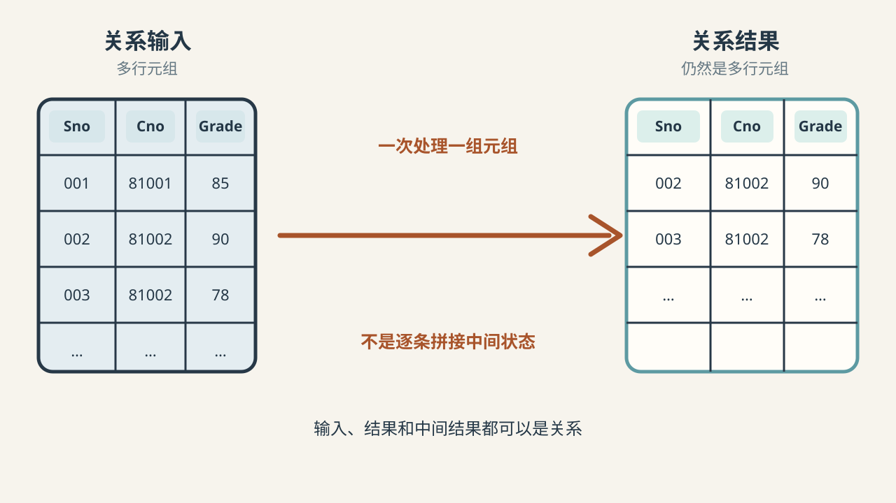

查询 Query
从已有关系中得到所需的结果
例如：查询某位学生某门课程的成绩
基本操作和导出操作
 VER. 2608
Built with impress.js
VER. 2608
Built with impress.js
面对业务要求，判断数据库是要返回结果表、修改记录，还是改变表结构
“查询成绩”产生结果关系，“修改成绩”改变关系中的数据
从已有关系中得到所需的结果
例如：查询某位学生某门课程的成绩
改变关系中的元组或属性值
例如：添加、删除、修改
查询回答“现在有什么”，更新改变“数据库中保存什么”
筛出关系中所有满足条件的行，是否需要一次读入整张表？

| 处理方式 | 逻辑操作单位 | 学习重点 |
|---|---|---|
| 成组处理 | 一组元组组成的关系 | 一次处理所有满足条件的行 |
| 逐条处理 | 一条记录 | 一次处理一条记录 |
查询在特定语言中怎样表达？
操作对象、结果和中间结果都是关系，所以复杂查询可以继续组合
基本操作用来筛出特定的行或列、合并或配对
| 操作 | 代数位置 | 主要问题 | 示例 |
|---|---|---|---|
| 选择 | 基本操作 | 哪些元组满足条件 | 找出选修 Cno=81002 的记录 |
| 投影 | 基本操作 | 保留哪些属性 | 只保留学号和姓名 |
| 并 | 基本操作 | 合并哪些同型关系 | 合并两个班的学生数据 |
| 差 | 基本操作 | 排除哪些同型关系 | 找免修某门课的学生 |
| 笛卡儿积 | 基本操作 | 所有配对组合是什么 | 形成可能配对后再筛选 |
选择、投影、并、差和笛卡儿积，是五种基本操作
组合关系、满足全部条件或找出共同部分
| 操作 | 代数位置 | 主要问题 | 学生选课中的例子 |
|---|---|---|---|
| 连接 | 导出操作 | 按相关属性组合哪些关系 | 按某个属性连接两个关系 |
| 除 | 导出操作 | 哪些对象与全部对象有关 | 找修满全部课程的学生 |
| 交 | 导出操作 | 哪些元组同时属于两组 | 找共同名单 |
连接、除和交可以由基本操作导出，也属于关系操作
查询选了编号为 81002 课程的学生姓名
SC → \(R_1\)（Cno=81002 的选课记录）
\(R_1\) → \(R_2\)（学生学号）
按 Sno 将 \(R_2\) 与 Student 连接 → \(R_3\)（补回学生信息）
\(R_3\) → \(R_4\)（学生姓名）
中间结果仍是关系，可以继续运算
请求是否数据？请求要得到什么结果？
| 业务请求 | 大类 | 具体操作 | 关系中的结果/变化 |
|---|---|---|---|
| 找选课记录 | 查询 | 选择 | 产生结果，不改变原关系 |
| 找出学生姓名 | 查询 | 选择、连接、投影 | 连接 Student 找到姓名 |
| 新增选课记录 | 更新 | 插入 | 增加一个元组 |
| 修改成绩 | 更新 | 修改 | 改变一个分量 |
| 删除成绩 | 更新 | 删除 | 移除满足条件的元组 |
| 定义关系结构 | 定义 | DDL | 改变关系结构 |
筛选选课记录、保留学号、连接学生、保留姓名
关系是关系代数的输入对象
用选择、投影、连接等操作处理输入关系
结果仍然是关系，可以继续下一步运算
SC → 选修 81002 的记录 → 学号关系 → 与 Student 组合 → 姓名关系
每一步关系运算的结果都能继续作为下一步输入
学生进入结果，当且仅当存在课程号匹配、学号相同的选课记录
用变量分别指代 Student 和 SC 中的一整行，再要求课程号匹配且两行学号相同
用变量分别表示学号、姓名、课程号等列值，再要求这些值满足同样条件
关系代数偏向“怎样运算”，关系演算偏向“满足什么条件”
SQL 是综合数据语言，不只提供查询
Data Query Language：从已有关系中查询结果
Data Definition Language：定义或修改关系结构和数据库对象
Data Manipulation Language：插入、删除和修改关系数据
Data Control Language：管理访问权限和数据控制
这些功能由具体 SQL 语句实现
是否能实现关系代数全部查询？
| 语言 | 表达方式 | 语言层次 |
|---|---|---|
| 关系代数 | 对关系进行运算 | 抽象查询语言 |
| 元组关系演算 | 用元组变量和谓词 | 抽象查询语言 |
| 域关系演算 | 用域变量和谓词 | 抽象查询语言 |
| SQL | 查询、定义、操纵与控制 | 实际综合语言；达到关系完备 |
关系代数、两类关系演算和 SQL 都能表达某个查询；但 SQL 还可以做更多
关系型数据库管理系统扫描表、查索引、为表建立连接
给出需要的关系结果和筛选条件，不逐步写出访问文件的动作
RDBMS 可以在顺序扫描、索引扫描和不同连接顺序中选择一种
不同执行计划应得到相同查询结果，但所需时间和资源不同
“非过程化”依然需要执行过程，只是具体过程交给了 RDBMS
从学号查询相应学生选了哪些课程
判断它产生结果、改变数据、改变结构还是改变权限
写出输入表、每张中间结果表和最终结果表，并标出各表保留哪些行和列
先选能回答问题的最小操作组合，判断哪些是基本操作、哪些是导出操作
区分用户描述的查询目标与 RDBMS 选择的扫描、索引和连接顺序
用关系代数式思路口述查询过程，画出每一步生成的关系